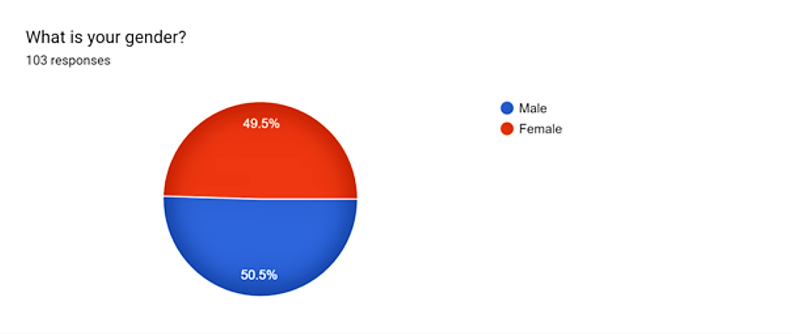

Result
From the previous questionaires, a series of chart and graph have been form to show the data visually.
Chart from questionaires:


What is your opinion on Bring Your Own Devices (BYOD) policies?
- I think the policy is good as it saves a lot of cost for the company although some data privacy might not be protected.
- I think bringing my own device has its benefits as it is more powerful than the pc my workplace can provide.
- Yeah, I can say that's a good idea. It's easier for them to do any activities at their work.
- Employees can bring their own devices such as smartphones and tablets anywhere and anytime easily. However, they may not want to get notifications all the time from their company.
- In my opinion, I would prefer the BOYD policy because I think we will feel more comfortable while using their own devices. It would be very stressful if we use someone's belongings. What if we accidentally damaged it, compensation is necessary.
- I think it's very useful because it can save costs in purchasing or renting devices for each employee.
- It is good because workers can be more flexible at work and can increase productivity.